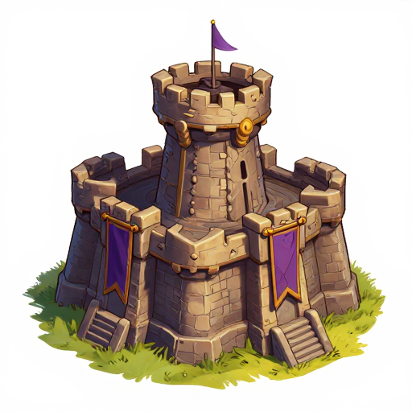
본진 성채
같은 소재 3종(본진 건물 / 지형 / 무림 검사 유닛)을 스타일별로 생성했습니다. 마음에 드는 스타일 알파벳을 알려주세요. 선택한 스타일로 전체 에셋(~100장)을 일괄 생성·교체합니다.
두꺼운 외곽선 + 유화풍 음영 + 따뜻한 채도 — 워크래프트 느낌에 가장 근접

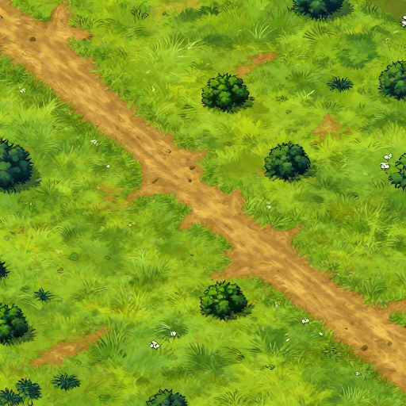
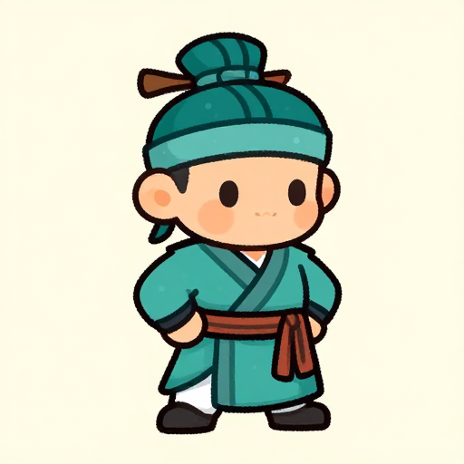
깔끔한 벡터 셰이프 + 셀 셰이딩 — 모바일 게임 같은 깔끔함, 일관성 최상
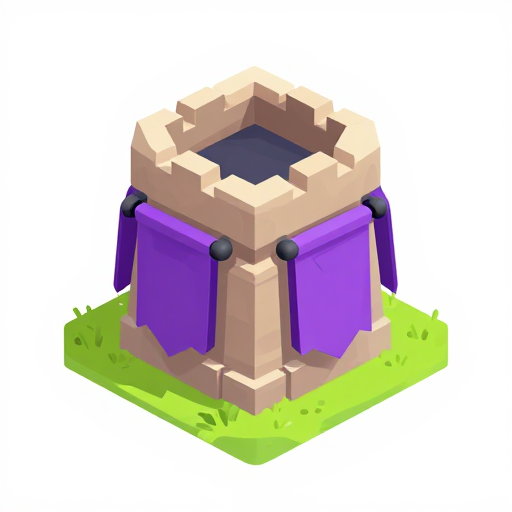
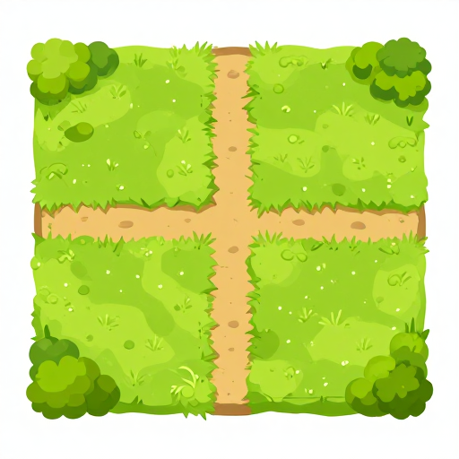
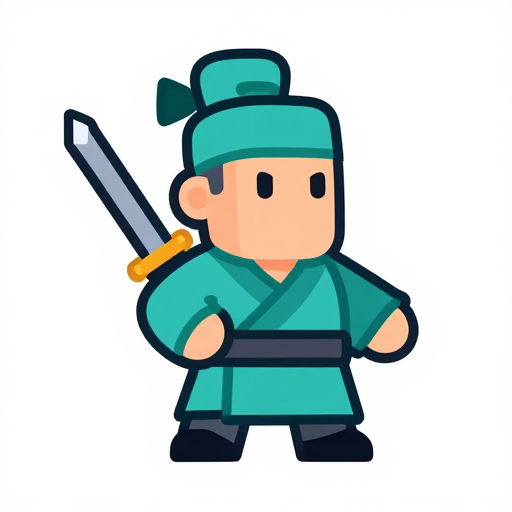
16비트 RTS 스프라이트 — 워크2 원작의 향수, 타일 게임과 궁합 최고
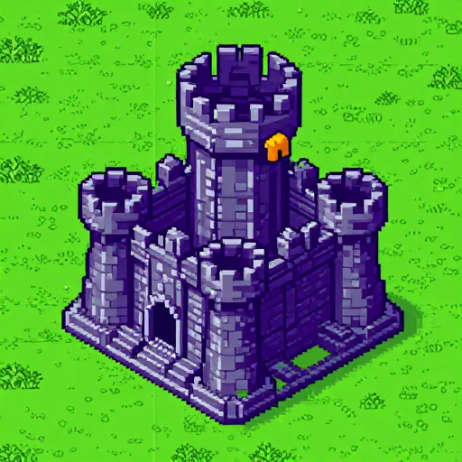
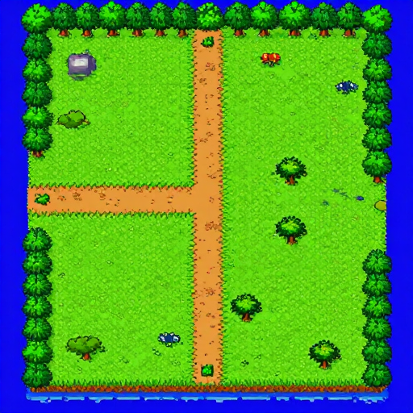
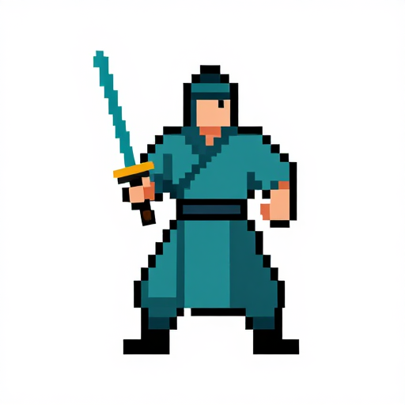
수묵 붓터치 + 담채 — 무림/요괴/천계 세계관과 어울리는 차별화 노선
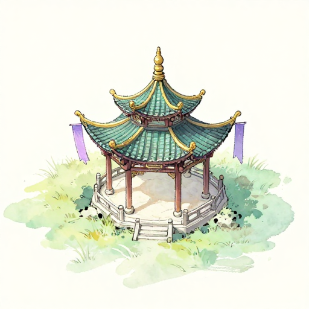
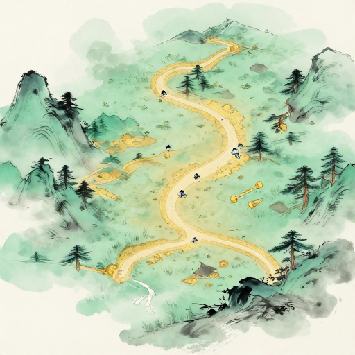
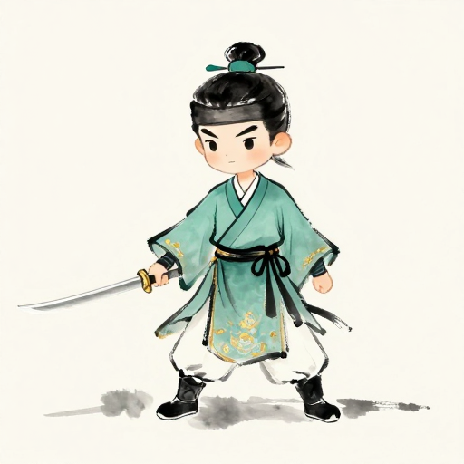